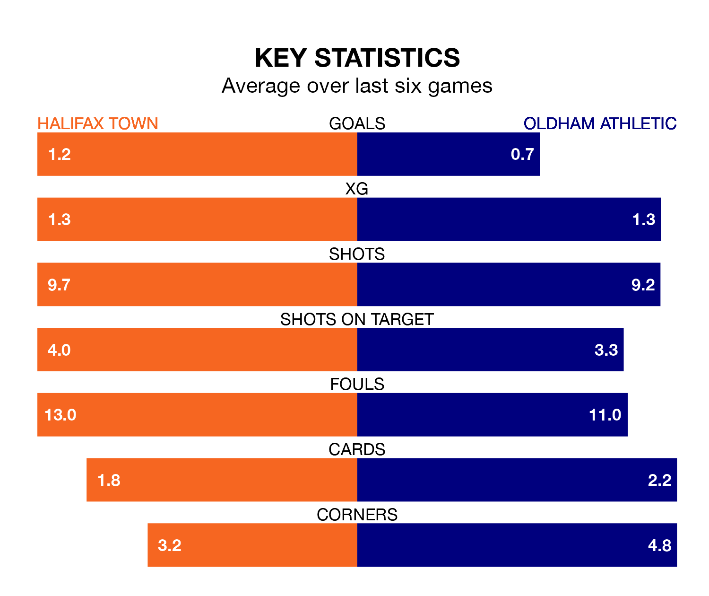

Two of the National League's meanest defences go head-to-head at the Shay Stadium on Thursday, when Halifax Town host Oldham Athletic.
Only two sides – Southend United and Bromley – have conceded fewer goals than Halifax to date: the home side have let in just 48 goals in 44 games.
The Latics have conceded 55 goals in 44 games, giving them the joint-fourth tightest back line so far this season.
Key to the Shaymen's home form has been Samuel William Johnson, who has allowed 0.95 goals past him per 90 minutes, compared to 1.05 for Matthew Hudson in the opposite net.
Halifax are in mixed form in the National League, with two wins and two draws from their last six games.
With no wins and four draws over that period, Oldham's form is worse – they have taken four points from 18, compared to Town's eight.
The Shaymen are ninth in the table after 44 games, of which they have won 18 and drawn 13, earning 67 points.
Athletic are one place behind the hosts in 10th, with 15 wins and 17 draws putting them on 62 points.
In the last three years, Halifax and Oldham have played each other on three occasions. Halifax won all of them.
Their last meeting was on August 15, when Halifax won 2-1 away.
Halifax's last match was on Tuesday, a 0-0 draw against Ebbsfleet United.
Oldham drew 0-0 with Oxford City last time out, on Saturday.
Updated: 15:40 (UTC), 18/04/24